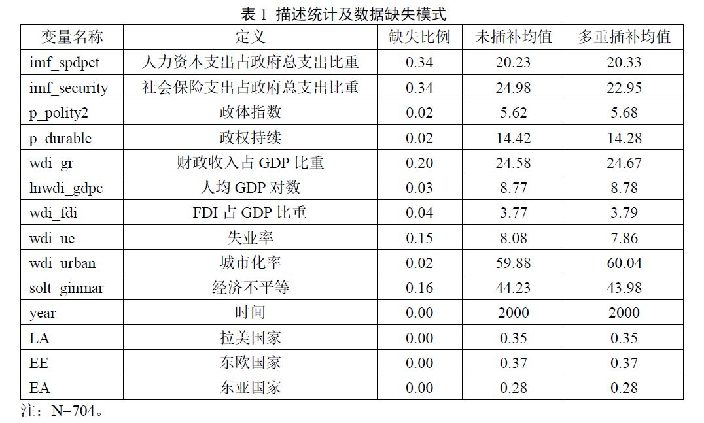

收录于合集
文献来源： 孟天广、白晨：《民主与福祉：中等收入国家的民主转型与福利国家——结合面板模型与定性比较分析》，载复旦大学陈树渠比较政治发展研究中心编《民主、制度与福利——2015年比较政治发展报告》，上海：复旦大学出版社，2015年版，第206-237页。
作者简介：
孟天广，政治学博士，清华大学政治学系副教授、博士研究生导师
白晨，北京大学国家发展研究院博士后
一、引言：
民主转型期中等收入国家的福利政治
第三波民主化浪潮的兴起，曾给那些身处民主转型国家的人们带来这样的信念：比之于威权体制，民主制更能激励政府致力于增进公民福祉。一些跨国比较研究发现民主程度与福利水平正相关，且这种关系随民主制度的持续而不断增强（Husted & Kenny, 1997; Brown & Hunter,1999; Kaufman & Segura-Ubiergo, 2001; Nelson, 2007; Deacon, 2009）。简言之，现有研究主要基于发达国家的福利政治学，强调民主转型与福利水平间的线性关系，即伴随民主进程的深入，竞争性选举作为连接民主制度与福利政策的重要机制，会将普通民众的福利诉求通过选票转化为影响政府决策的外部压力，从而促使政府提高福利水平（Nelson, 2007; Huber, Mustillo & Stephens,2008）。尽管民主对福利支出的促进作用在一些发展中国家得到验证，但我们注意到，对那些步入中等收入行列的国家而言，福利支出并没有随民主制确立而普遍增长；相反，一些国家甚至出现不同程度的“福利倒退”。这一现象让人不禁疑惑：民主化一定会促进福利支出增加吗？为什么有些国家提升了福利支出，而另外一些国家却走向“福利削减”？遗憾的是，目前国内外学者对中等收入国家民主转型与福利政策关系的讨论尚未充分展开。
鉴于此，本文以1990-2011年东亚、东欧及拉美32个中等收入国家为研究对象，综合运用适用于大样本的面板模型与适用于中小规模样本之定性比较分析（Qualitative Comparative Analysis，QCA），实证地检验中等收入国家民主转型与福利支出之间的因果联系，探讨民主制度对中等收入国家福利支出的多元化影响路径，为中等收入国家福利政治研究提供有益的方法与思路。本文首先回顾中等收入国家民主转型期福利政策演进史，并对现有解释理论进行述评，然后介绍本文的研究方法和数据，接下来分别呈现面板模型和定性比较分析的发现，最后从方法和理论两个维度进行总结和讨论。
二、
民主转型期中等收入国家的福利政治
二战后初期，多数中等收入国家同发达国家一样，注重福利支出对改善国民生活水平的重要作用，逐步建立起相对完备的福利体制。70年代末至90年代初，国际格局的剧烈变动对原有福利体制产生了深远影响：一方面，民主化在加速国内威权体制瓦解的同时，强化了普通民众在福利议题上对政府施压的能力。另一方面，经济全球化背景下日益激烈的国际竞争不仅促使各国政府更加注重人力资本投入以提高本国竞争力，而且激发了国内民众对政府完善社会保险体系补偿全球化风险的需求。但是，受经济波动与债务危机影响，多数国家面临严重的财政约束，无力回应民众对福利扩张的诉求。同时，倡导削减福利的“自由福利议程”（Liberal Welfare Agenda）开始在拉美、东欧等国家中流行起来（Stephan Haggard & Robert Kaufman, 2008）。尽管如此，中等收入国家并没有向福利削减“一边倒”，反而走上多元化福利改革道路。
（一）中等收入国家福利政治演变的历史回顾
为增进读者对中等收入国家福利政治演变的了解，为下文分析提供基础知识，这部分将对拉美、东欧和东亚地区中等收入国家福利政治的演变史进行简要回顾。
拉美是较早出台福利法规的地区。上世纪二三十年代，以智利、巴西、阿根廷为代表的“先锋国”就建立起相对完善的社会保险制度。然而，受利益集团和增长模式的影响，多数拉美国家的福利体制呈现出高度不均衡的发展格局—福利资源向城市中产和工人阶层过分倾斜，而大量非正规就业群体和农民被排除在外（房连泉，2009）。1980年代，民主浪潮席卷拉美，阿根廷、巴西、智利、墨西哥等先后民主化。选举权扩大使各国政府在福利不平等问题上面临来自低收入选民日益强大的压力。尽管如此，多数国家深陷债务危机的泥淖，沉重的财政负担削弱了政府能力，福利支出随之下降。1990年代以来，随着经济复苏与全球化进程加剧，多数拉美国家将“自由福利议程”视为调和财政约束与选民压力的有效手段。一方面，政府推动社会保险市场化改革，降低福利支出，提高筹资效率。另一方面，继续巩固教育、医疗领域财政投入，通过增加济贫项目，以较低成本扩大保障网络对贫困和弱势群体的覆盖面（Powell & Barrientos, 2004）。
受苏联影响，东欧各国在战后社会主义工业化进程中走上“社会保障型国家”的发展道路。政府掌控并有计划地分配医疗、养老、住房、就业等所有福利资源。社会保障经费通过税收筹集，由财政部统一拨付，以维持地方公共服务机构的运作（弗朗索瓦•巴富瓦尔著、陆象淦等译，2006）。1960年代，农业集体化运动将保障网络推向农村，形成城乡均衡发展的福利分配格局。1970-80年代，东欧国家进入福利发展“黄金期”，政府在提高福利支出的同时进一步推出家庭津贴、失业保险等保障。然而，1990年代初剧烈的政治变革使东欧国家在短期内转向民主政体，随之而来的是大规模市场化引发的持续经济震动与财务危机。受国际经济组织和西欧社会民主党的影响，东欧各国开始改革原社会主义福利体制，以应对经济衰退与老龄化引发的福利困境。（Afonso, Nickel & Rother,2005）然而，比之拉美，东欧的福利改革更为温和。社会主义时代的福利政策遗产强化了公众对政府福利提供的预期（Lipsmeyer, 2003）。民主转型使这一预期通过选举等途径得以直接有效表达，迫使各国政府在努力维持较高福利（尤其在社会保险领域）的同时增加特定保障项目（残疾险、家庭补贴等）（Haggard & Kaufman, 2008）。
东亚福利体制表现出强烈的生产主义倾向，社会政策是经济政策的延伸并服从于经济增长的需要（Holliday, 2005）。1960年代以来，为了推动外向型经济快速发展，多数东亚国家采取限制社会保险开支但加大人力资本投入的政策，以降低出口企业的生产成本并提高劳动生产率。同时，国家赋予家庭、社区等非正式网络以更多责任， 试图以低福利支出为经济发展提供良好支持（Croissant,2004）。1980年代后期，民主浪潮波及东亚。不同的是，东亚中等收入国家在民主转型期实现了经济的快速发展，民主转型与经济起飞同步无疑对这一时期东亚的福利扩张起到了重要推动作用。1990年代末，尽管金融危机使东亚经济遭受重挫，不少国家开始效法拉美，但较轻的福利负担和短期内经济快速复苏无疑限制了“自由福利议程”在东亚的影响。同时，经济危机暴露了东亚福利体制在抵御外部风险上的种种弊端，促使各国政府对社会保险网络的重视，进而在东亚地区引发了新一轮的福利扩张。（Kuhnle et al, 2000）
（二）民主转型与福利支出的理论回顾与评述
概括起来，学术界对民主转型与福利支出之关系的讨论集中在中位收入选民理论和权力资源理论。中位收入选民理论认为，由于中位收入选民的偏好位于所有选民中间，更具代表性，是政府决策的主要依据，因而在竞争性选举中，政府的福利支出通常会趋向中位收入选民的政策偏好。任何使得选票集中于低收入群体的选举规则，都能引发选民对再分配的强烈需求，最终导致政府支出扩大（Meltzer & Richards, 1981）。民主转型期，选举权扩大导致低收入选民比重的增加，他们对增加福利投入、扩大再分配的诉求成为影响政府决策的重要力量，促使政府提高福利支出。
权力资源理论将福利政策视为利益集团斗争的结果，福利支出增加与否取决于相关利益集团（工会等）在社会财富再分配过程中争取更大份额的能力（Huber & Stephens, 2001）。权力资源理论深受马克思主义“阶级分析传统”的影响，将以工会、社会民主党为代表的左翼势力视为影响福利支出的决定因素。持该理论的学者认为，那些规模更大、组织集中程度更高的工会往往能够通过协助本国左翼政党赢得选举，以获取政府对增加社会福利的承诺与保障。在民主转型过程中，不断扩大的竞争性选举为利益集团的竞选活动和院外活动提供更多渠道，增强了它们对政府福利决策的现实影响力（Hicks,1999）。
基于上述理论，民主转型与福利支出之间存在密切联系，可以预测，不断扩大的竞争性选举与利益集团活动会引起政府增加福利支出。然而，中等收入国家民主转型期福利政治的演进历程表明，简单的“民主—福利”论难以充分解释中等收入国家福利政治多元化演进的事实，现有“民主—福利”论至少存在三方面局限性。
首先，简单“民主—福利”论忽视了民主转型影响福利支出的制度依赖性。中位收入选民理论和权利资源理论将竞争性选举视为连接民主制与福利支出的唯一制度。然而，中等收入国家的民主转型经历了复杂过程，且往往与财政制度、中央- 地方权力分割等制度变革相伴随，民主制对福利支出的影响离不开其他重要制度。国家自主性理论认为，强国家更容易成为强福利国家，而强国家主要反映在纵向的财税汲取力与横向的决策集中力两方面。政府自下而上的财税汲取力越强，就越倾向于制定扩张型福利政策；政府决策权越集中，越有利于推动福利扩张，而决策权分散往往导致“最小公分母”式福利制度（Hicks & Duane Swank,1992）。政策遗产假说认为，福利政策是历史过程。原有制度安排不仅决定政治资源在福利政策中的分配结构，还会对利益集团结构、福利改革规则以及可获得的遏制福利削减的政策工具产生持续影响（Pierson, 1996）。这种影响在民主制下通过两种途径发挥作用：选民预期和利益集团活动。以东欧为例，尽管多数国家在转型后面临严重经济困境，但原有普惠型福利体制持续影响选民的福利预期，并通过选举形成遏制政府削减福利的外部压力。原有福利政策创造巨大利益空间，导致强大利益集团形成，既得利益集团利用民主参政渠道影响决策以维持并扩大本集团的福利分配份额（Haggard & Kaufman, 2008）。
第二，“民主—福利”论忽视了经济发展和全球化等经济条件的约束性。不可否认，持续的经济增长是福利支出的经济基础，作为后发国家，中等收入国家大都面临经济增长的政治目标和严重的财政危机。与第三波民主化相伴的经济全球化空前加剧了中等收入国家面临的国际竞争，这都限制着其福利政策选项。根据瓦格纳法则，经济发展会导致公共部门与公共品需求的扩张，进而引发公共支出增长，福利政策也同样。由经济增长引发的产业结构调整会导致经济风险向特定产业集中（如劳动密集型产业工人会面临更多的失业与工伤风险），从而强化相关群体对提高福利水平的需求。同时，经济增长还通过改善生活条件影响人口结构（如老龄人口增加）而强化公众对政府医疗和养老投入的需求（Boix, 2001）。随着经济全球化进程，国际经济因素对各国福利政策的影响日益显著。有学者提出“补偿假设”来分析发展中国家回应经济全球化的行为（Garrett, 2001）。激烈的国际竞争促使政府增加人力资本投入来提高本国企业的国际竞争力。不断拉大的贫富差距与频繁的经济波动激发民众不满，促使左翼政治力量壮大，迫使政府通过完善社会保障体系来补偿经济全球化的利益受损者，以维护国内政治稳定（Avelino, Brown & Hunter, 2005）。
第三，民主转型对福利支出的影响还受福利支出类型的影响，民主转型对不同类型福利支出可能存在不同影响。以往研究大多只关注民主制对福利总支出的影响，这种做法至少存在三个问题：（1）研究福利总支出忽视了福利支出内部的结构性差异，教育、医疗、社会保险等福利项目在政策目标、受益者、再分配方式等方面存在本质性差异（盖伊•彼得斯著，郭为桂、黄宁莺译，2008）。（2）分析民主转型对福利总支出的影响可能会掩盖真实关系，民主转型对一种福利支出的正影响可能被其对另一种福利支出的负影响抵消，而且会掩盖“民主—福利”影响路径的多样性（Nita & Stephan, 2005）。（3）民主转型影响不同类型福利支出的具体机制可能不同。回顾历史，很多中等收入国家对教育、医疗等人力资本支出和对养老和救助等社会保险支出采取了迥异策略。民主程度越高，人力资本支出就越高（Lindert, 1996），但民主程度与社会保险支出却不存在类似关系（Mulligan, Gil & Sala-i-Martin, 2010）。因此，在考察民主转型与福利支出的因果联系时应区分不同类型的福利支出，否则会难以恰当识别民主转型对福利支出的多元化影响路径。现有福利支出类型学研究将福利支出分为人力资本支出（human capital expenditure）和社会保险支出（social security expenditure）两大类（Segura-Ubiergo, 2007），前者指用于发展和再生产人力资本的教育和卫生支出，后者包括以养老保险为主的各类社会保险支出。
总之，基于以上的历史回顾和理论分析，中等收入国家民主转型与福利支出间存在复杂联系，简化版“民主—福利”论难以成立。可以说，“民主—福利”论对民主转型引起福利支出扩张的线性预测值得质疑，考虑到中等收入国家民主转型的复杂性和综合性，民主转型对福利支出的影响路径应该是多元的，诸如国家能力、政策遗产、经济增长和全球化等因素都可能与民主制形成多种“条件组合”以分别对人力资本支出和社会保险支出施加影响。下文将综合利用定量和定性方法识别中等收入国家的民主转型是否、以及如何影响福利支出。
三、
研究方法、数据来源与变量测量
（一）研究方法
为在中等收入国家检验“民主—福利”命题，本文综合应用定量和定性研究方法。首先利用面板模型检验中等收入国家民主转型对福利支出的影响，并通过对固定效应模型、双向固定效应模型和随机效应模型的比较进行稳健性检验。面板模型的主要优势是有效控制不随时间变化的遗漏变量造成的异质性偏误，面板数据同时将单位间和时间间变化的变量考虑进来，既可以利用时间不变变量的方差，又利用了时间变化变量的方差。面板数据包含多单位多时间点的数据，可以增加观察数据的样本量（巴尔塔基著，白伯林等译，2010）。具体而言，本文面板模型的设定如下：
Yit=a+B1·Yit-1 + B2·Xit+ B3·Zit + Eit
其中，Yit为国家i在时间t的人力资本支出（或社会保险支出）。a是常数项，Xit为民主程度，B2为Xit回归系数，B1为Yit时间滞后项回归系数，B3为协变量回归系数，Eit为残差项。
受数据可获性限制，研究数据中部分变量存在较严重的数据缺失问题，一些变量的缺失比例介于2%-34%。缺失数据对量化分析带来严重挑战，将导致因果效应估计有偏且不精确。传统上采取列删除法处理缺失数据，但会造成信息损失和选择性偏差。针对上述问题，多重插补法（Multiple Imputation）通过对缺失数据补缺来提高统计效率（Rubin, 1987），King等进一步提出时间序列数据（TSCS）缺失值的多重插补方法（Honaker & King,2010），因而本文首先应用Gary King的方法对面板数据补缺，然后利用Stata提供的MI模块对多重插补数据进行面板数据分析。
其次，通过定性比较分析（QCA）探索民主程度与重要政治经济变量的条件组合对福利支出高低的解释力，并基于特定个案识别民主影响福利支出的因果路径。QCA是一种案例导向的多案例比较研究方法（Ragin, 2008）。该方法区别于变量导向的传统量化方法，主张在集合关系分析（analysis of set relations）基础上识别某一结果产生之原因或原因组合，可以评估因果联系之充分性和必要性。定性比较分析包括适用于二分变量的确定集（Crisp Set）QCA和适用于连续变量的模糊集（Fuzzy Set）QCA，近来被广泛应用于比较政治领域（何俊志，2013）。
QCA认为集合关系在社会科学中居于核心地位，既是定性分析的基础性术语，也是社会科学理论逻辑推理的基础，然而却未得到社会科学界的普遍认可。集合理论分析难以普及的原因主要在于难以处理连续变量，然而，模糊集QCA可以进行连续变量的定性比较分析。与传统定量分析不同，QCA具有五个比较优势：（1）传统定量分析存在假定只有通过量化方法才可获得一般性知识、与日常生活逻辑不符等缺陷：（2）集合关系不应以相关关系来评价，集合关系分析的内在特征涉及社会现象间的因果连接和非对称性，相对微弱的相关关系可能存在强集合关系；（3）QCA可以分析复杂因果关系，挖掘因果关系成立的不同条件组合；（4）可以同时实现因果关系研究之必要条件和充分条件的评估，为共享给定结果的案例寻找共享原因或为共享具体原因或原因组合的案例寻找共同结果；（5）适用于中等规模和小样本研究。
（二）数据来源
本文采集了32个拉美、东欧和东亚地区的中等收入国家在1990-2011年间的相关数据。其中，民主程度和政权持续数据来自“政体指数（Polity IV index）”；福利支出（包括公共教育、医疗和社会保险支出）数据来自国际货币基金组织1990-2011年《政府财政数据年鉴》，对于部分东亚国家福利支出数据缺失情况，我们利用亚洲发展银行数据进行补缺；国家财税汲取能力、外商直接投资（FDI）、人均GDP、收入不平等等数据来自世界银行世界发展指数数据库（Database of World Development Indicators, WDI）。
（三）变量测量
**
**
本文对相关变量的测量方法如下（参见表1）：福利支出是本文的结果变量。一般来说，所有福利项目支出都属于福利支出（孟天广等，2013），如现金给付（如养老金和社会救助等）和非现金给付（如医疗保健、教育及住房等）。大多数学者将公共财政花费在教育、医疗、养老金、失业津贴、公共住房及个人社会服务等社会政策项目上的支出统称为福利支出（Glennerster & Hills, 1998）。考虑到福利项目间的本质差异，福利支出可分为人力资本支出（教育和医疗）和社会保险支出（养老金和救助等）两大类。本文以两类支出占政府支出的比重来测量政府的福利支出水平。
本文利用“政体指数”建立的民主评分作为核心自变量来测量中等收入国家民主制度的建立与巩固情况。民主程度评分基于政治参与的竞争性和规律性、政府职位的公开性和竞争性及对政府首脑的限制等5个维度，评分值为-10到10，得分越高表明民主程度越高。此外，考虑到政权持续反映着政权制度化，因而纳入政权持续作为检验民主转型效应的控制变量。政权持续指特定政权持续时间的长度，持续时间越长说明政权越稳定（Tracy, Kruk, Harper & Galea, 2010）。
协变量（或原因条件）的测量如下：以政府财政收入占GDP比重来衡量国家纵向财税汲取能力，通常而言，政府自下而上的财税汲取力越强，就越倾向于提高福利支出；通过纳入福利支出时间滞后项来刻画原有福利政策遗产对民主转型期福利支出的路径依赖式影响；以WDI提供的经过购买力平价后的人均GDP来测量经济发展水平；对于经济全球化，通过外商直接投资净流入值（net inflow）占GDP比重来衡量一国介入经济全球化的程度。本文还选取基尼系数、失业率和城市化率作为刻画中位收入选民福利偏好与左翼利益集团的代理变量。首先，一个国家的经济越不平等，该国贫困人口对政府增加福利支出再分配财富的需求就越强烈，民主转型后应该增加福利支出（Castronova, 2001）。第二，城市化水平与工会及左翼政党的发展正相关，根据权力资源理论，城市化水平高的地区，工会及左翼政党势力较强，会促使政府注重福利支出。第三，高失业率一方面会因劳动力剩余而削弱政府人力资本投入；另一方面会推动左翼政党保护工人权益的集体行动，反过来导致社会保险支出增加（Kim, 2007）。

本文的研究对象为32个中等收入国家，属于中等规模样本，而且不同国家间存在较强的异质性，且分析变量均为连续变量，因而本文采取模糊集QCA。模糊集QCA要求先将连续变量转换为分布在[0,1]区间内的成员度（degree of membership）数据。根据拉金建议，本文所设定的人力资本支出高和社会保险支出高两个QCA模型的一致性均不小于0.8，并分别比较不同条件组合对两个QCA模型的覆盖度和一致性。在QCA框架下，覆盖度类似于定量分析中的决定系数，反映该原因组合对结果出现的解释力；一致性类似定量分析中的显著性水平，0.8及以上水平表明显著。
四、
中等收入国家的民主转型与福利支出：
面板模型的发现
这部分分别检验中等收入国家民主转型对人力资本支出和社会保险支出的影响。出于稳健性检验的考虑，本文同时提供了固定效应（FE）模型和随机效应（RE）模型的结果，以检验模型设定的影响。同时，为了识别民主程度对福利支出的净影响，依据上文讨论分别设置五个模型来控制其他政治经济条件的影响。模型（1）是基准模型，只纳入了民主程度和政权持续两个自变量；模型（2）增加了对时间和地区差异的控制；模型（3）控制了经济发展水平、财政能力、FDI、经济不平等、失业率、城市化率等经济因素的影响；模型（4）是最终模型，同时纳入模型（2）、（3）的控制变量。模型（1）-（4）均纳入了因变量的一阶滞后项作为对政策遗产的控制，模型（5）重复了模型（4），但没有纳入因变量的一阶滞后项。
（一）民主转型与人力资本支出
表2报告了中等收入国家人力资本支出影响因素模型的估计结果。首先来考察民主程度对人力资本支出的影响。模型（1）检验了民主程度和政权持续对人力资本支出的影响。在控制了因变量滞后项后，民主程度对人力资本支出有显著的正向影响，而政权持续不影响人力资本支出。模型（2）-（3）分别控制了地区和时间差异、宏观经济社会条件的影响，模型（4）和（5）在控制了所有上述变量后发现民主程度是人力资本支出的促进因素。总之，中等收入国家的民主程度与人力资本支出显著正相关。以控制因素的模型（5）为例，在固定效应模型下，平均地，民主程度每提高1分，人力资本支出占GDP比重相应提高0.614%。考虑到时间滞后效应和政策遗产的影响，模型（5）高估了民主程度对人力资本支出的效应，而控制了因变量滞后项的模型（4）更为准确。模型（4）的固定效应估计发现，民主程度提高1分可以导致人力资本支出增长0.393%。考虑到民主程度的实际取值范围为-7到10，因而其引起的人力资本支出变化介于-2.75到3.93个百分点之间。
其次，拉美、东欧和东亚三大区域间在人力资本支出上存在巨大差异。模型（2）识别出人力资本支出的区域间差异，东亚的人力资本支出高于拉美国家1.595%，相反，东欧的人力资本支出低于拉美国家2.096%。简言之，东亚的人力资本支出最高，拉美次之，东欧最低，这与先前研究一致。不过，当控制经济发展和社会结构等宏观变量后，区域间差异不再统计显著。这表明，区域间人力资本支出差异只是经济发展和社会结构因素的反映。
第三，财政收入比重和失业率对中等收入国家的人力资本支出有负向影响。模型（3）-（5）分析了经济发展和社会机构等宏观因素的影响，仅有财政收入比重对人力资本支出发挥了稳定的负向影响，随机效应模型下失业率也负作用于人力资本支出。以模型（4）的固定效应模型为例，财政收入占GDP比重每提高1%，人力资本支出相应下降0.193%，失业率每1%的增长引起人力资本支出0.267%的下降。财政收入比重越低的国家越倾向于将有限财源花费在人力资本投资领域，这与发展型国家理论的主张一致，财政收入越少的国家越经济地制定财政支出计划，而投资人力资本正符合中等收入国家追求经济绩效的动机。失业率越高的国家由于劳动力过剩而越不需要人力资本积累，从而缺乏扩大人力资本支出的需求。
概括起来，民主程度对中等收入国家的人力资本发挥着实质性影响，民主程度越高的国家投资在教育和医疗等人力资本领域的公共支出越多。相反，经济发展水平和社会结构等宏观经济条件对人力资本支出的影响较小且不稳定，仅有财政收入比重和失业率发挥着显著但有限的负向影响。
（二）民主转型与社会保险支出
根据表3，首先考察民主程度对社会保险支出的影响。模型（1）在控制了因变量时间滞后项后仅在随机效应模型下，民主程度对社会保险支出有出较显著的正向影响，而政权持续不影响社会保险支出。然而，模型（2）-（3）在控制了地区和时间差异、宏观经济社会条件的影响后，模型（4）和（5）进一步控制了所有上述变量后发现民主程度对社会保险支出的提升作用消失了。总之，中等收入国家的民主程度与社会保险支出间不存在显著相关性。
其次，拉美、东欧和东亚三大区域间在社会保险支出上同样有巨大差异。根据模型（2），东亚国家的平均社会保险支出低于拉美4.887%，相反，东欧国家的平均人力资本支出高出拉美2.648%。简言之，东欧的社会保险支出最高，拉美次之，东亚最低。当控制了经济发展和社会结构等宏观社会经济变量后，区域间社会保险支出的差异弱化了，但东亚仍然显著低于拉美，这表明社会保险支出的区域差异可以用经济发展和社会结构等因素来解释。
第三，经济发展和财政收入比重显著地促进了中等收入国家的社会保险支出。模型（3）-（5）显示，人均GDP、政府财政收入比重与社会保险支出显著正相关。以模型（4）的随机效应模型为例，人均GDP的自然对数每增长1个单位，社会保险支出相应提高0.952%；政府财政收入比重每提高1%，社会保险支出相应提高0.096%。上述结果符合瓦格尔法则与国家能力假设，由于社会保险项目收益小于且慢于公共教育与卫生投入，因而如果没有良好的经济基础与强大的国家财税汲取能力做保障，政府很难大幅增加社会保险投入。
第四，经济不平等不利于社会保险支出的增长，而失业率和城市化率对中等收入国家的人力资本支出有正向影响。同样以模型（4）的随机效应模型为例，基尼系数增长1个单位会引起社会保险支出下降0.121%。但失业率和城市化率每提高1%，社会保险支出分别提高0.103%和0.041%。一般而言，随着城市化推进，会有更多的农业劳动人口向城市二三产业转移，有利于工会组织与左翼政党力量的壮大。而高失业率会强化左翼政治力量为谋求政府完善社会保险体系的集体行动，最终促进社会保险支出的增加。
概括起来，民主程度对中等收入国家社会保险支出没有显著影响。相反，除经济不平等外，经济发展水平、财政收入比重、失业率及城市化率等宏观社会经济结构变量与社会保险支出都表现出比较显著的正相关性。

五、
中等收入国家的民主转型与福利支出：
定性比较分析的发现
上文基于面板模型讨论了民主转型对中等收入国家福利支出的影响，然而，传统量化分析事实上存在对分析对象同质性、因果关系对称性的假定，也缺乏对因果联系建立之因果条件及原因组合的有效识别。这部分将引入近来为政治经济学家所推荐之定性比较分析方法展开分析，以期识别中等收入国家福利政治的几个主要因果路径。
基于现有文献的建议，以及为了和上文面板模型结果的比较，这部分仍然分析民主程度、政权持续、经济发展水平、经济增长率、FDI、失业率、城市化和经济不平等等因素分别对人力资本支出和社会保险支出的影响。参考Ragin的建议，我们先计算1990-2011年32个中等收入国家在各变量上的平均值，然后利用模糊集定性比较分析分别建立人力资本支出和社会保险支出两个解释模型。
（一）民主转型与人力资本支出的定性比较分析
表4呈现了中等收入国家人力资本支出模糊集定性比较分析的结果。其中“”是条件变量连接符号，表示“且”的连接关系，净覆盖率是从某一条件组合的粗覆盖率中排除与其他条件组合相重合部分后得到的该条件组合的净贡献，反映某一特定条件组合的解释力（唐睿、唐世平, 2013）。根据表4，本文设定的定性比较分析模型总覆盖率为0.721，总一致性为0.808，表明本文设定的模型具备较强的解释力。可以发现，高人力资本支出国家的形成存在五条简化后的最优条件组合（Parsimonious Solution）：（1）经济不发达低失业率民主国家；（2）政权稳定高城市化财政收入低；（3）政权稳定低城市化民主国家；（4）政权不稳定低失业率；（5）政权不稳定低城市化财政收入低。其中条件组合（2）的净覆盖率最高，为0.154，条件组合（3）和（1）次之，净覆盖率分别为0.124和0.075。
值得注意的是，条件组合（1）、（3）均显示民主程度高的国家人力资本支出高，这两个原因条件组合的净覆盖率合计0.199，这与面板模型得出民主程度与人力资本支出正相关的结果一致。简言之，民主程度高的确构成人力资本支出高的（充分）制度条件。考虑到原因条件组合（4）和（5）的净覆盖率极低，只有原因条件组合（1）、（2）、（3）构成高人力资本支出的有效因果链条，而其中两条因果链条蕴含民主程度高这一条件。具体地，一方面，民主程度高、城市化水平低且政权稳定的国家倾向于在健康和教育上花费更多财政支出，典型的国家包括萨尔瓦多、斯洛文尼亚和斯洛伐克等；另一方面，民主程度高、失业率低且经济不发达的国家也愿意投资人力资本积累，典型的国家有玻利维亚、蒙古等。此外，定性比较分析也发现了一条与民主程度无关的高人力资本支出原因条件组合，即城市化水平高、财政收入低但政权稳定的国家也能成为高人力资本支出国家，如哥伦比亚、马兰西亚和智利等。以上分析表明，除了民主程度高，影响人力资本支出高的主要因素包括政权持续、经济水平、城市化水平、失业率等，但这些条件都具有可替代性。
（二）民主转型与社会保险支出的定性比较分析
表5是中等收入国家社会保险支出模糊集定性比较分析的结果。可以发现，我们设定的定性比较分析模型总覆盖率达到0.819，总一致性为0.872，表明本文设定的模型具备较强的解释能力。高社会保险支出国家的形成包括三条简化后的最优条件组合：（1）财政收入高非民主国家；（2）经济发达民主国家；（3）低失业率高城市化高经济不平等。其中条件组合（2）的净覆盖率最高，为0.481，是主导性条件组合，而条件组合（3）和（1）次之，净覆盖率分别为0.048和0.038。
与上文发现民主程度高与人力资本支出高的密切相联系有异，事实上条件组合（1）和（2）显示民主程度高和民主程度低都可以导致社会保险支出高这一结果。表5的发现说明，民主程度并非如上文面板模型（参见表3）所示不影响社会保险支出，恰恰相反，民主程度高或民主程度低均构成社会保险支出高的原因条件。不过，相对而言，条件组合（2）的净覆盖率远高于条件组合（1），表明民主程度高在很大程度上仍然是形成社会保险支出高的主导性原因。
在构成社会保险支出高的有效因果链条中，民主程度高或低都可以导致社会保险支出高。一方面，民主程度高且经济发达的国家花费在社会保险领域的财政支出较高，典型的国家包括斯洛伐克、捷克、匈牙利等；另一方面，民主程度低但财政收入高的国家也在社会保险领域支出高，如俄罗斯等。此外，我们还发现了一条与民主程度无关的高社会保险支出条件组合，即低失业率、高城市化水平且高经济不平等的国家社会保险支出也很高，例如墨西哥、玻利维亚等。以上分析表明，除了民主程度高低，影响社会保险支出高的因素还包括经济增长率和发展水平、城市化水平、失业率等，但这些条件都具有可替代性。
六、
结论与讨论
对于身处民主转型期的人们而言，成熟民主国家的经验似乎表明，民主制比威权制更能提供社会福利。然而，基于发达国家经验的“民主—福利”简化论到底在多大程度上适用于中等收入国家仍然有待扎实的实证检验。事实上，民主转型期中等收入国家同时存在“福利扩张”和“福利倒退”的多元化政策取向，这从经验上挑战了民主转型与福利扩张的线性联系。本文基于1990-2011年32个中等收入国家的数据，运用面板模型和定性比较分析相结合的前沿方法，考察了民主转型影响中等收入国家福利支出的多元化影响路径。研究发现，民主转型对福利支出存在复杂的影响关系，二者关系的具体形式取决于福利支出的具体类型。
首先，民主转型的确引起了中等收入国家人力资本支出的提升。根据面板模型结果，相比其他宏观经济社会条件，中等收入国家的民主程度显示了对人力资本支出的强有力正向影响，而且该效应在控制了地区和时间差异、宏观经济社会条件后仍然统计显著。民主程度每提高1分可以导致人力资本支出占GDP比重0.393%的增长，考虑到民主程度的取值范围，其导致的人力资本支出变化介于[-2.75%, 3.93%]。定性比较分析发现了类似关系，三条导致高人力资本支出国家的主要条件组合中有两条因果链条包含民主程度高这一条件，净覆盖率合计0.199。民主程度高、城市化水平低且政权稳定的国家在卫生和教育政策上财政支出较多，同时，民主程度高、失业率低且经济不发达的国家也更多投资人力资本积累。
第二，民主转型对中等收入国家社会保险支出的影响存在两条路径。面板模型结果显示，中等收入国家的民主程度对社会保险支出没有显著影响，但却受到经济发展和社会结构等宏观经济社会条件的重要影响。那么，是否可以说民主转型对社会保险支出没有影响呢？定性比较分析否定了二者无关的结论，反而呈现出民主程度高和民主程度低均构成社会保险支出高的原因条件。在三条形成高社会保险国家的条件组合中分别有一条因果链条将民主程度高和民主程度低与高社会保险支出联系起来，净覆盖率分别为0.481和0.041。一方面，民主程度高且经济发达的国家花费在社会保险领域的财政支出也高，另一方面，民主程度低但财政收入高的国家社会保险支出也很高。相对而言，前者的净覆盖率远高于后者，因而民主程度高仍然是形成社会保险支出高的主导性原因。
第三，本文通过对面板模型和定性比较分析的比较考察了定量和定性方法在比较政治经济研究中的优势和局限性。基于大样本数据、变量导向的面板模型对于识别民主转型对福利支出的平均效应贡献重大，然而，定量分析的对称性本质和对净效应的追求也限制着其识别因果关系的能力。例如，面板模型发现民主程度不影响社会保险支出，然而，定性比较分析却发现民主程度高和民主程度低均构成高社会保险支出的原因条件，有力地挑战了莫里根等人利用回归分析得出“民主与社会保险支出无关”的结论（Mulligan, C., Gil, R. & Sala-i-Martin, X., 2010）。事实上，民主程度并非不影响社会保险支出，经济发达的民主国家、财政汲取能力高的非民主国家都可以推进社会保险支出的增加。因而，有效结合定量和定性分析是比较政治经济研究迫在眉睫的方法论使命。
总之，本文对中等收入国家民主转型与福利政策之关系的讨论，不仅有利于拓宽单纯基于发达国家福利政治学的传统思维，而且为中等收入国家的福利改革提供知识积累。从方法上同时引入面板模型与定性比较分析，既能够概括民主转型与福利支出在中等收入国家的一般性关系，又能深挖民主程度与其它因素之条件组合导致福利支出“扩张”或“削减”的多元化因果路径。当然，不可否认本文仍然存在一些局限性：一、受数据限制，我们只讨论中央政府福利支出，而忽视了地方政府福利支出；二、除东欧外，拉美及东亚中等收入国家数据缺失比例较高，尽管多重插补方法有助于解决缺失问题，但仍然会影响估计结果的准确性；三、现有定性比较分析难以处理面板数据，这极大地限制了模型化时间效应的能力。对于以上不足之处，我们将在未来研究中积极利用新数据和新方法加以完善。